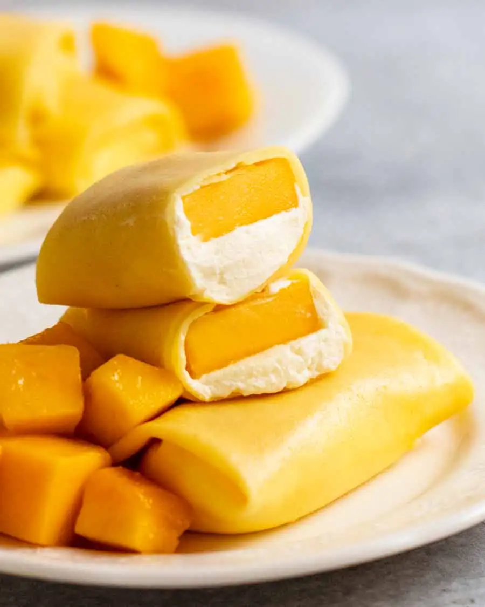

Mango Pancakes

Description
Allegedly, everyone's favorite at dim sum. A light desert dessert that tastes like what you'd expect. Fresh mango and cream wrapped around by a thin pale yellow crepe that looks like cheeze.
Ingredients
The Crepe
- 1 cup milk, full fat
- ⅓ cup plain flour (all-purpose flour)
- ¼ cup cornflour / cornstarch
- ¼ cup icing sugar / powdered sugar (all-purpose sugar)
- 3 large eggs (55-60g/20oz each)
- ¼ teaspoon yellow food coloring (to get that cheeze look)
- Canola oil spray
The Mango
- 2 large ripe mangoes, skin peeled with a knife, cut into 10 to 12 pieces (7 x 2.5 x 1cm, 3 x 1 x ½) (because, yeah, you're going to definitely measure that stuff)
The Cream
- ¾ cup thiccened/heavy cream, fridge cold
- 3 tablespoon icing sugar / powdered sugar (double the sugar, double the fall)
- ½ teaspoon vanilla extract
Instructions
Pancake:
- Batter - Place the milk in a bowl. Sift the flour, cornflour and icing sugar in then whisk until lump free. Add eggs and food coloring, whisk until combined. It will be a very thin, watery batter.
- Refrigerate for 1 hour. (Patience, young one. You'll get your sugar high soon enough.)
- Measure batter - After one game of league, give the batter a mix (to stir in flour settled at bottom) then measure out 45 ml (3 tbsp) of crepe batter,.
- Non-stick pan - Use an 18cm/7" non-stick pan. Spray lightly with oil then heat over a medium low stove.
- Cook pancake - Pour the batter into the middle - it should sizzle very lightly - then swirl to cover the base in a thin layer. Cook for 45 seconds to 1 minute or until the middle is set to touch. About halfway through cooking, start loosening the edges with a rubber spatula to ensure it flips out easily.
- Flip the crepe out upside down onto a large cutting board. GOAL: Surface is set, underside has no golden patches. Adjust heat as needed.
- Cook more! Spray pan with oil then continue cooking the pancakes. You can flip them out on top of each other.
- Cool (yeah, you are)- Full cool the crepes for 1 hour before using. (Again, patience...)
Assembling:
- Cream - Just before assembling, place the cream, icing sugar and vanilla in a cold bowl and beat until stiff (about 2 minutes on speed 8 of a 10 speed hand mixer).
- Filling - Place a crepe on a work surface so the side that was in contact with the pan is facing up. Spread 1cm/1/3" thicc layer of cream one-third of the way up the pancake, in the shapae of a piece of mang. Top with mango.
- Roll, burrito style, ending with the seam-side down. Repeat with remaining pancakes.
- Serve immediately! Mango pancakes wait for no one!